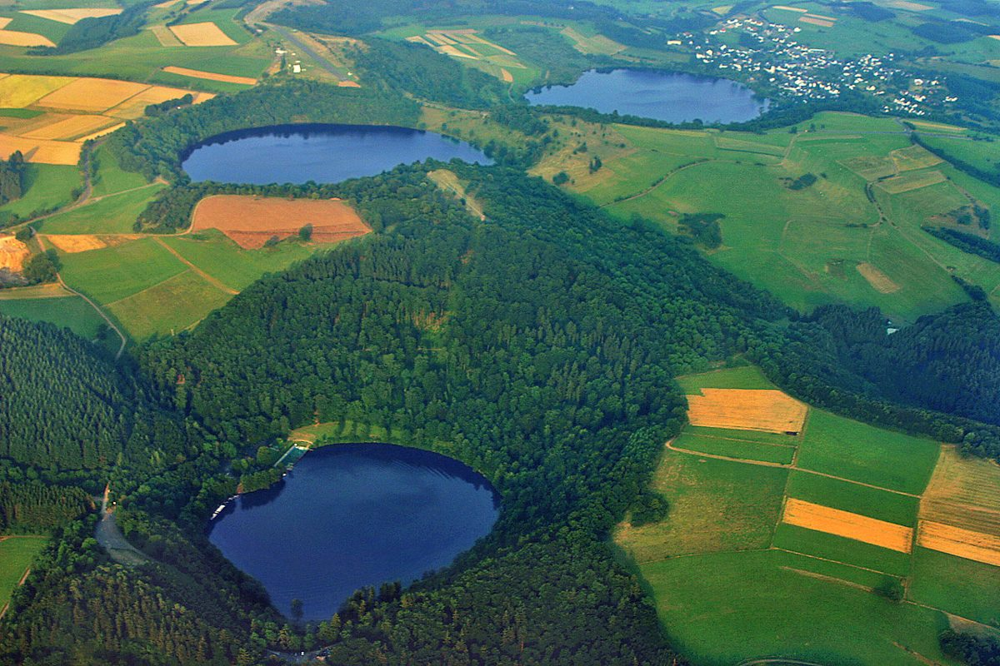

探索埃菲尔玛尔湖：德国自然的瑰宝

德国埃菲尔玛尔湖（Eifel Maare）是一片令人惊叹的自然景观，位于德国西部。这些湖泊是由古老的火山活动形成的，形状独特，水质清澈，四周环绕着茂密的森林。无论是徒步旅行、骑行还是单纯欣赏风光，埃菲尔玛尔湖都是一个绝佳的旅行目的地。
最佳旅行时间
埃菲尔玛尔湖全年都适合游览，但最佳时间是春季和夏季。春天，湖畔的花朵盛开，绿意盎然；夏天则适合游泳和户外活动。秋季的景色也非常迷人，树叶呈现出金黄与红色，非常适合摄影爱好者。冬季虽然较为寒冷，但湖面结冰时也别有一番风情。
如何到达
埃菲尔玛尔湖位于德国西部的埃菲尔地区，最近的交通枢纽是科隆。从科隆出发，可以乘坐火车或自驾前往。公共交通相对便利，但也有部分景点需要步行或骑行才能到达。自驾是最灵活的选择，可以轻松探索多个湖泊。
不容错过的景点
1. 魏希泽湖（Weinfelder Maar）
魏希泽湖是埃菲尔玛尔湖中最具特色的一个，湖水清澈见底，四周环绕着陡峭的火山壁。这里是徒步旅行的绝佳地点，尤其是在夏季，湖水清凉，适合游泳。
2. 皮尔马特湖（Pulvermaar）
皮尔马特湖是德国最深的火山湖之一，水质极为纯净。湖边设有步行道和观景台，非常适合散步和拍照。
3. 加尔菲尔德湖（Geomaar）
加尔菲尔德湖是一个较小的湖泊，但其周围的景色非常静谧。这里适合那些想要远离人群、享受宁静时光的游客。
美食推荐
埃菲尔地区的当地美食非常值得一试。推荐尝试当地的土豆煎饼（Reibekuchen），这是一种用土豆制成的煎饼，外脆内软，通常搭配苹果酱或奶酪。此外，雷司令葡萄酒（Riesling）也是埃菲尔地区的特产，尤其在夏季，一杯冰镇的雷司令葡萄酒与当地的美食相得益彰。
埃菲尔玛尔湖不仅是一个自然爱好者的天堂，也是一个放松身心、享受美食的好去处。无论是独自旅行还是与家人朋友一起，这里都能为你带来难忘的回忆。
最后的建议
游览埃菲尔玛尔湖时，建议穿着舒适的鞋子，因为许多景点需要步行。同时，带上相机捕捉美景，并准备好足够的饮品和零食，因为你可能会在湖边度过一整天。无论你是大自然爱好者还是摄影迷，埃菲尔玛尔湖都会让你流连忘返。
Haiktec
Text mit KI erstellt und automatisch geprueft.